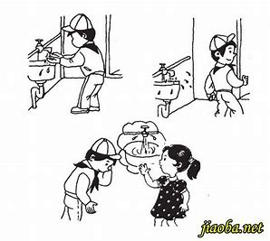

我常想在纷扰中寻出一点闲静来，然而委实不容易。目前是这么离奇，心里是这么 芜杂。一个人做到只剩了回忆的时候，生涯大概总要算是无聊了罢，但有时竟会 连回忆也没有。中国的做文章有轨范，世事也仍然是螺旋。前几天我离开中山大 学的时候，便想起四个月以前的离开厦门大学;听到飞机在上鸣叫，竟记得了一 年前在北京城上日日旋绕的飞机。我那时还做了一篇短文，叫做《一觉》。现在 是连这“一觉"也没有了。

广州的天气热得真早，夕阳从西窗射入，逼得人只能勉强穿一件单衣。书桌上的一-盆“水 横枝”，是我先前没有见过的:就是一段树，只要浸在水中，枝叶便青葱得可爱。看看绿 叶，编编旧稿，总算也在做一点事。做着这等事，真是虽生之日，犹死之年，很可以驱 除炎热的。前天，已将《野草》编定了;这回便轮到陆续载在《莽原》上的《旧事重提》， 我还替他改了一一个名称:《朝花夕拾》。带露折花，色香自然要好得多，但是我不能够。 便是现在心目中的离奇和芜杂，我也还不能使他即刻幻化，转成离奇和芜杂的文章。或者， 他日仰看流云时，会在我的眼前一闪烁罢。
锚点测试